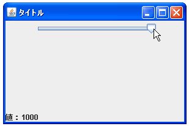

- Home ›
- Swing ›
- JSliderクラス
最小値と最大値を設定する
スライダーを使って設定できる最小値と最大値の設定を行う方法を確認します。指定しない場合には最小値が「0」、最大値が「100」に設定されます。
最小値と最大値を設定するにはコンストラクタで指定する方法とメソッドを使う方法があります。まずはコンストラクタで設定する方法を確認します。
JSlider
public JSlider(int min,
int max)
最小値と最大値の合計を平均した値に等しい初期値を持つ、指定された最小値 および最大値を使って、水平スライダを作成します。 スライダの最小値および最大値として設定された値が適切でないために問題が 発生した場合は、スライダのデータを保持する BoundedRangeModel がその問題 を処理します。詳細は、BoundedRangeModel のドキュメントを参照してくださ い。 パラメータ: min - スライダの最小値 max - スライダの最大値
引数にはスライダーに設定する最小値と最大値をそれぞれint型の値として指定します。またコンストラクタで指定した場合には、指定した最小値と最大値の平均の値が初期値として自動的に設定されます。
実際の使い方は次のようになります。
JSlider slider = JSlider(10, 1000);
メソッドで指定する
コンストラクタで設定する以外にJSliderクラスのオブジェクトを作成してからメソッドを使って最小値と最大値を設定することも可能です。まず最小値を設定するにはJSliderクラスで用意されている「setMinimum」メソッドを使います。
setMinimum public void setMinimum(int minimum)
スライダの最小値を minimum に設定します。このメソッドはモデルに新しい最 小値を転送します。 不適切な値を割り当てたことにより発生する数学的な問題は、データモデル (BoundedRangeModel インスタンス) が処理します。詳細は、BoundedRangeModel のドキュメントを参照してください。 新しい最小値が以前の最小値と異なる場合は、すべての変更リスナーが通知を受 け取ります。 パラメータ: n - 新しい最小値
引数にはスライダーの最小値をint型の値として指定します。
最大値を設定するにはJSliderクラスで用意されている「setMaximum」メソッドを使います。
setMaximum public void setMaximum(int maximum)
スライダの最大値を maximum に設定します。このメソッドはモデルに新しい 最大値を転送します。 不適切な値を割り当てたことにより発生する数学的な問題は、データモデル (BoundedRangeModel インスタンス) が処理します。詳細は、 BoundedRangeModel のドキュメントを参照してください。 新しい最大値が以前の最大値と異なる場合は、すべての変更リスナーが通知を 受け取ります。 パラメータ: n - 新しい最大値
引数にはスライダーの最大値をint型の値として指定します。
実際の使い方は次のようになります。
JSlider slider = JSlider(); slider.setMinimum(10); slider.setMaximum(1000);
サンプルプログラム
では簡単なサンプルを作成して試してみます。
import javax.swing.*;
import java.awt.BorderLayout;
import javax.swing.event.*;
public class JSliderTest3 extends JFrame implements ChangeListener{
JSlider slider;
JLabel label;
public static void main(String[] args){
JSliderTest3 frame = new JSliderTest3();
frame.setDefaultCloseOperation(JFrame.EXIT_ON_CLOSE);
frame.setBounds(10, 10, 300, 200);
frame.setTitle("タイトル");
frame.setVisible(true);
}
JSliderTest3(){
slider = new JSlider(10, 1000);
slider.addChangeListener(this);
JPanel p = new JPanel();
p.add(slider);
label = new JLabel();
label.setText("値：" + slider.getValue());
getContentPane().add(p, BorderLayout.CENTER);
getContentPane().add(label, BorderLayout.PAGE_END);
}
public void stateChanged(ChangeEvent e) {
label.setText("値：" + slider.getValue());
}
}
上記をコンパイルした後で実行すると次のように表示されます。
今回は最小値を「10」最大値を「1000」に設定していますので初期値は平均値である「505」になっています。それではノブを移動させて最小値と最大値の時の値を確認してみましょう。

( Written by Tatsuo Ikura )

著者 / TATSUO IKURA
初心者～中級者の方を対象としたプログラミング方法や開発環境の構築の解説を行うサイトの運営を行っています。